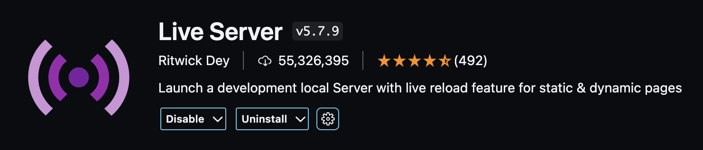
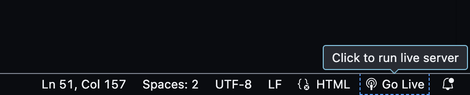

Why is Node.js Important? Node.js is essential because it allows you to run your PetRESTServer.js, which is a Node.js server. It also includes npm, a package manager that helps manage your project dependencies.
Preferred Method: Install via Installer
1. Go to the Node.js website and download the macOS installer (LTS version is recommended for stability).
2. After downloading, you will get a .pkg file. Double-click the file to start the installation process.
3. Follow the on-screen instructions to install both Node.js and npm.
4. Once the installation is complete, verify the installation by opening your terminal (press Cmd + Space, type "Terminal") and running:
node -v
5. This will display the installed Node.js version. Similarly, check the npm version by running:
npm -v
2. Install Visual Studio Code (VSCode)
Why use VSCode? VSCode is a lightweight but powerful code editor that offers excellent features for development, including built-in Git support and a marketplace for extensions.
2. Open the .zip file, then move Visual Studio Code to your Applications folder.
3. Launch VSCode by pressing Cmd + Space and typing "Visual Studio Code" or by navigating to the Applications folder and clicking on it.
3. Install Live Server Extension in VSCode
Why Live Server? The Live Server extension allows you to run your HTML files locally and see real-time updates in your browser as you make changes to the code.
Steps to Install Live Server
1. Open VSCode.
2. Press Cmd + Shift + X to open the Extensions Marketplace.
3. In the search bar, type "Live Server" and press Enter.
4. Find the Live Server extension by Ritwick Dey and click Install.
Here is what the extension looks like in the Marketplace:

4. Running the Pet REST Server
Why is running the server important? Running your server locally allows you to test your backend (Node.js) without deploying it to a remote environment.
Steps to Run the Server
1. Open a terminal inside VSCode by going to Terminal => New Terminal or pressing Ctrl + ` ("`" key is found directly below the esc key on top right corner of your keyboard).
2. Navigate to the directory where your PetRESTServer.js is located by running:
cd /path/to/your/server
3. Start the server by running:
node PetRESTServer.js
4. You should see an output similar to this:
Server running at http://127.0.0.1:8000/
5. Install Postman (Optional)
Why use Postman? Postman is a powerful tool that allows you to test your API endpoints without needing to interact with the front-end. It's great for verifying your API logic.
2. Open the downloaded .dmg file and drag the Postman app into your Applications folder.
3. Launch Postman by pressing Cmd + Space and typing "Postman" or by finding it in the Applications folder.
4. Test your server by creating a new request in Postman. Enter the URL http://127.0.0.1:8000 and choose the appropriate HTTP method (GET, POST, DELETE, etc.).
6. Using VSCode to Edit and Test Code
Best Practices for Using VSCode:
Now that everything is set up, you are ready to develop your project. Here are some best practices to follow:
Use VSCode to edit your JavaScript and HTML files.
Utilize the Live Server extension to see real-time updates as you modify your front-end code.
Keep your Node.js server running while developing so you can test the backend and frontend flow.
How to Run the Live Server:
The Live Server can be run by using a convenient button located in the bottom right corner of VSCode. Follow these steps to start and stop the server:
Make sure you have your HTML file open in VSCode.
Look at the bottom right corner of VSCode for a button labeled "Go Live". Click this button to start the Live Server, as shown in the image below:

Once the server is running, you can view your project by opening the local server URL (usually something like http://127.0.0.1:5500).
When you are done and want to stop the server, go back to the bottom right corner of VSCode and click the "Port : 5500" button to close the server, as shown in the image below: